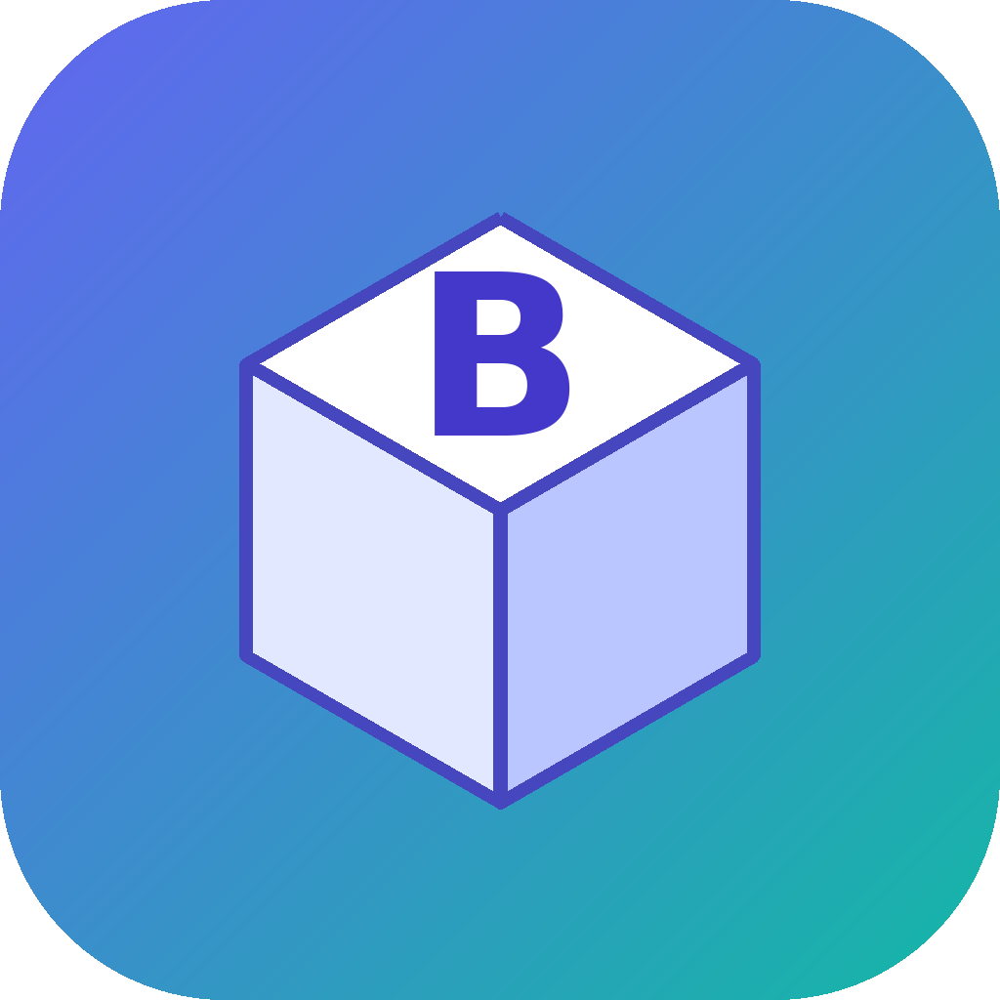
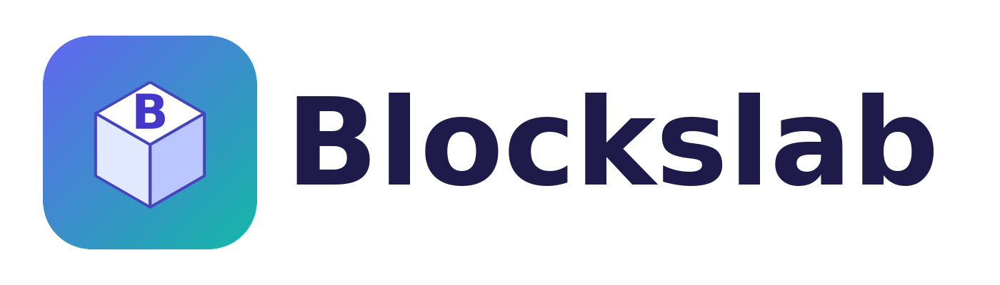
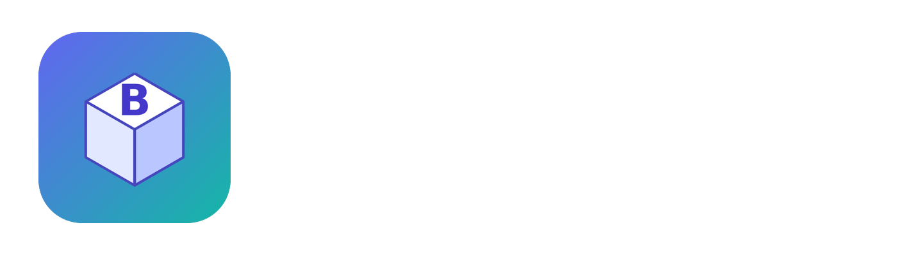

Perfis de gráficos
Desempenho, Equilibrado ou Qualidade com um clique.

blockslabLauncher comunitário para Windows
O Blockslab é um launcher alternativo de código aberto para quem quer personalizar e configurar a própria experiência.
Baixe e extraia o ZIP para encontrar Blockslab.exe. Requer o .NET 6 Desktop Runtime.
B / 2.11.4
Recursos
Desempenho, Equilibrado ou Qualidade com um clique.
Salve seus FastFlags com nome e faça backup das configurações.
Libere espaço removendo temporários do Roblox pelo app.
Mostre aos amigos o que você está jogando.
Troque som de morte, cursor, fontes e ícones.
Interface em português do Brasil e telemetria desligada por padrão.
Identidade Blockslab
Logotipos oficiais do Blockslab preparados para fundos claros e escuros.


Sobre o projeto
O Blockslab é um fork do Bloxstrap, criado por pizzaboxer e colaboradores, distribuído sob a licença MIT. Todo o código está no GitHub para quem quiser ler, compilar e contribuir.
Não é afiliado à Roblox Corporation nem ao projeto Bloxstrap original.
Ver no GitHubBlockslab.exe.Criador
Criador do Blockslab
@PCgamerbom
Carregando status…
Ver perfil no RobloxDados do Roblox atualizados a cada 30 segundos, carregados via RoProxy.
Perguntas
O código-fonte é público e pode ser auditado no GitHub. Baixe somente pelo repositório oficial ou por este site.
O Blockslab não injeta código no cliente do Roblox, mas nenhum software de terceiros tem garantia total. Use por sua conta e risco.
O Blockslab é um fork do Bloxstrap (licença MIT). Os créditos do autor original foram mantidos.
Abra uma issue no GitHub.
Pacote para Windows · requer .NET 6 Desktop Runtime.